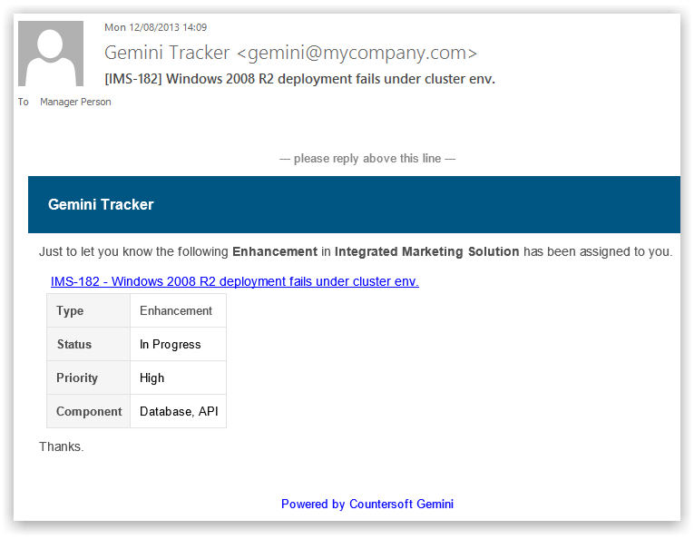
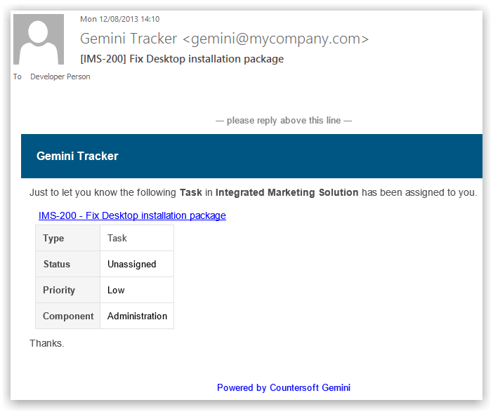

Depending upon user preferences and global options, users can receive immediate email alerts when they create or are assigned items.
You can receive an email alert every time you are assigned to an item (resourced).

You can receive an email alert every time you create an item - it's a confirmation notice for your new item.

These types of alerts can be disabled by users who do not wish to be notified about items they create.